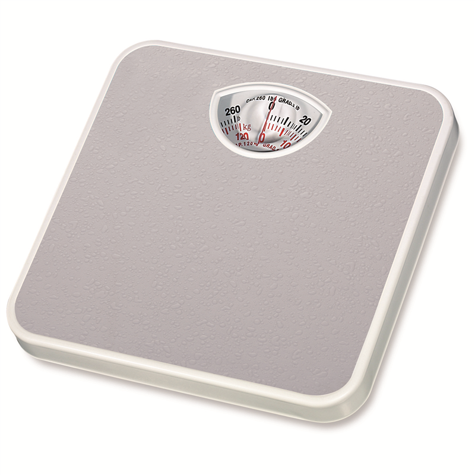
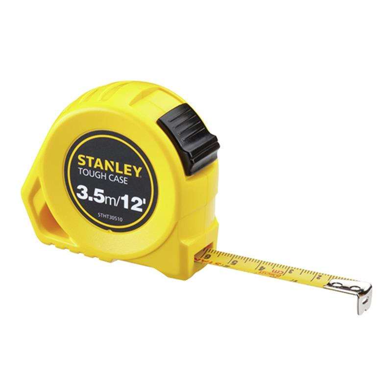
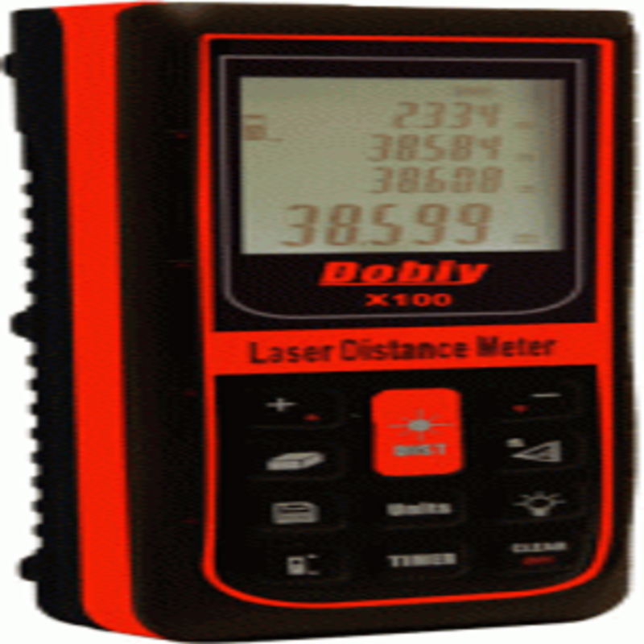
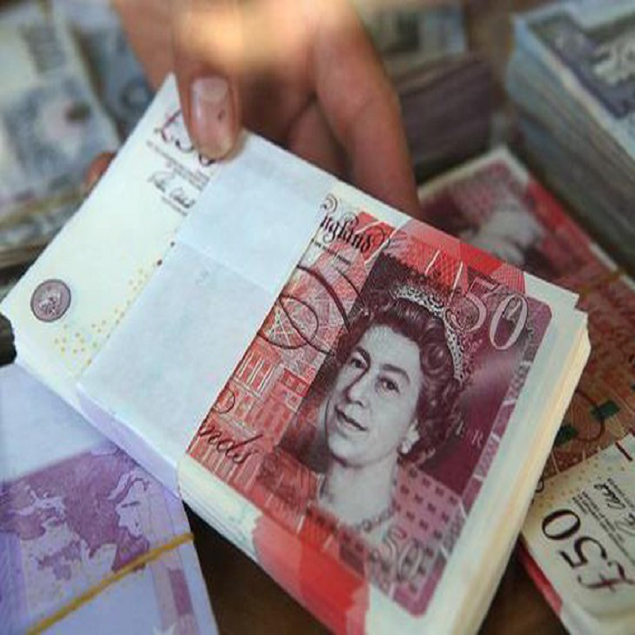
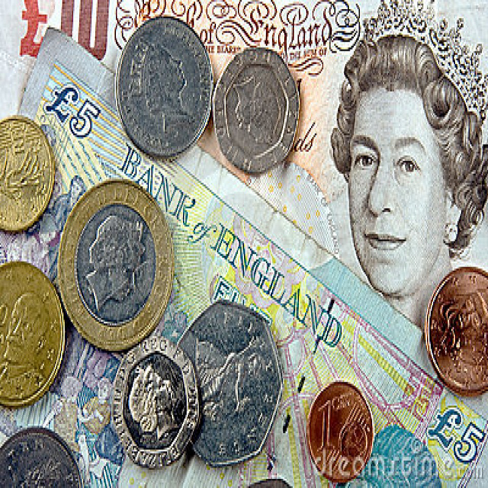

Historically, many different systems of units have been used, where a system of units is defined
as a
collection of units of measurement with rules that relate them to each other. A unit of
measurement is a
defined magnitude of a quantity that it used as a standard for measurement for the same kind of
quantity,
such as measurements of length, weight, and volume.
In the past, many systems of measurement were defined on a local level, and could be based on
factors as
arbitrary as the length of a king's thumb. While this may work on a local level, when considering
trade,
as
well as science, having systems of units based on units that others may not be able to relate to
or
understand makes interaction difficult. As such, the development of more universal and consistent
systems
developed over time. Today, some of the systems of units in use include the metric system, the
imperial
system, and the United States customary units.
The International System of Units (SI) is the standard metric system that is currently used, and
consists of
seven SI base units of length, mass, time, temperature, electric current, luminous intensity, and
amount
of
substance. Although SI is used almost universally in science (including in the US), some countries
such
as
the United States still use their own system of units. This is partly due to the substantial
financial
and
cultural costs involved in changing a measurement system compared to the potential benefit of
using a
standardized system. Since US customary units (USC) are so entrenched in the United States, and SI
is
already used in most applications where standardization is important, everyday use of USC is still
prevalent
in the United States, and is unlikely to change. As such, many unit converters including this
Conversion
Calculator exist, and will continue to do so to ensure that people globally are able to
communicate
different measurements effectively.


In the eighth and ninth centuries of the Common Era (CE), Arab civilization flourished in the Middle
East
and Spain. The Arabs used coins as a measurement of units of weight since a minted coin could not easily
be
cut or shaved to reduce its weight, and thus provided a measurable standard. They used a coin called a
silver dirhem as a basic measure of weight, which had a weight roughly equivalent to 45 fully grown
grains
of barley. Ten dirhems comprised a Wukryeh which was translated into Latin as an "uncia" – the origin of
the
word "ounce."
Over time, trade spread from the Mediterranean area to Europe, including the northern German City
States. As
a result, a pound, 16 ounces of silver, or 7200 grains, became a commonly used measure in many regions.
While England also adopted this measure, a shortage of silver caused King Offa to reduce the measurement
of
the pound to 5400 grains in order to use smaller coins. Eventually, when William the Conqueror became
King
of England, he retained the 5400-grain pound for minting coins, but reverted to the 7200-grain pound for
other purposes.
Though many countries used the pound from that point onward, including England (the British pound
sterling,
or GBP was equal to one pound-weight of silver in King Offa's time), the avoirdupois weight system was
adopted during the reign of Queen Elizabeth in the 16th century. It was a system based on the weight of
coal, and its name was derived from the French phrase "avoir de pois" (goods of weight or property). The
avoirdupois was equivalent to 7,000 grains, 256 drams of 27.344 grains each, or 16 ounces of 437 ½
grains
each. Since 1959, the avoirdupois pound has been officially defined in most English-speaking countries
as
0.45359237 kilograms.
Different systems of measurement also developed over time in Asian countries. For example, in ancient
India,
a measure of weight called the "Satamana" was used, and was equal to the weight of 100 gunja berries. In
China, the first emperor Shi Huang Di created a system of weights and measures in the third century BCE
(before Common Era). The measurement of weight was based on the shi, which was equivalent to
approximately
132 pounds. The Chi and Zhang were units of length equivalent to approximately 25 centimeters (9.8
inches)
and 3 meters (9.8 feet) respectively. The Chinese also developed a means to ensure accuracy through use
of a
special size of bowl used for measurements that also made a specific sound when struck – if the sound
was
off pitch, the measurement was not accurate.
In 1668, John Wilkins proposed a decimal system in which length, area, volume, and mass were linked to each other based on a pendulum that had a beat of one second as a base unit of length. In 1670, Gabriel Mouton proposed a decimal system that was instead based on the circumference of the earth, an idea supported by other prominent scientists of the time such as Jean Picard and Christiaan Huygens, but that did not take hold for approximately another 100 years. By the mid-eighteenth century, it was clear to nations who traded and exchanged scientific ideas that standardization of weights and measures was necessary. In 1790, Charles Maurice de Talleyrand-Perigord, the Prince of Talleyrand, approached the British (represented by John Riggs-Miller) and the Americans (represented by Thomas Jefferson) with proposals to define a common standard of length based on the length of a pendulum. In that same year, Thomas Jefferson, presented the "Plan for Establishing Uniformity in the Coinage, Weights, and Measures of the United States," which advocated for a decimal system in which units were related to each other by powers of ten. A committee that was formed in France comprised of some of the most prominent scientists of the day came to a similar conclusion, and also proposed a decimal system for all weights and measures. Although Congress considered Jefferson's report, it was not adopted. In Great Britain, John Riggs-Miller lost his British Parliamentary seat in the 1790 election. As such, the measurement system was only implemented in France, and in 1795, the metric system was formally defined in French law. It was not until 1799 however that the metric system was officially adopted in France, though it was still not universally observed across the country. Spread of the metric system did not occur quickly, and areas that were annexed by France during Napoleon's reign were the first to adopt the metric system. By 1875, two thirds of the European population, and nearly half the world's population had adopted the metric system. By 1920, the percentage of the world's population using the imperial system or the US customary system was ~22%, with 25% using mainly the metric system, and 53% using neither. The International System of Units, currently the most widely used system of measurement, was published in 1960. It has been adopted by all developed countries except for the United States, though as previously mentioned, it is used in science, as well as heavily in the military, even in the US.
Since other systems of measurement are still used around the world, such as the United States and the United Kingdom, this site aims to help people convert units of measurement with Metric Converter and Metric Conversion Table and to better understand alternative measurements that they are unfamiliar with. The measurement units are categorized into types (such as Temperature Conversion, Weight Conversion and so on) When clicking the Measurement Units you will then be directed to a page containing a series of metric conversion calculators.
-----> You may enter numbers in scientific notation, often called exponential notation, using the "e" format common to computer programs. For example: 1 x 10-6 = 1.0e-6.
-----> The British ton is the long ton, which is 2240 pounds, and the U.S. ton is the short ton which is 2000 pounds. Both tons are actually defined in the same way. 1 ton is equal to 20 hundredweight. It is just the definition of the hundredweight that differs between countries. In the U.S. there are 100 pounds in the hundredweight, and in Britain there are 112 pounds in the hundredweight. This causes the actual weight of the ton to differ between countries. To distinguish between the two tons, the smaller U.S. ton is called short, while the larger British ton is called long. There is also an third type of ton called the metric ton, equal to 1000 kilograms, or approximately 2204 pounds. The metric ton is officially called tonne. The SI standard calls it tonne, but the U.S. Government recommends calling it metric ton.
----> The knot (/nɒt/) is a unit of speed equal to one nautical mile per hour, exactly
1.852 km/h
(approximately 1.15078 mph or 0.514 m/s). The ISO standard symbol for the knot is kn. The same symbol
is preferred by the Institute of Electrical and Electronics Engineers (IEEE); kt is also common,
especially
in aviation, where it is the form recommended by the International Civil Aviation Organization (ICAO).
The knot is a non-SI unit. The knot is used in meteorology, and in maritime and air navigation. A vessel
travelling at 1 knot along a meridian travels approximately one minute of geographic latitude in one
hour.
Etymologically, the term derives from counting the number of knots in the line that unspooled from the
reel
of a chip log in a specific time.
-----> A nautical mile is a unit of measurement used in air, marine, and space
navigation,and for the
definition of territorial waters. Historically, it was defined as one minute ( 1/60
of a degree) of latitude along any line of longitude. Today the international nautical mile is defined
as
exactly 1852 metres (6076 ft; 1.151 mi). The derived unit of speed is the knot, one nautical mile per
hour.
-----> Rain is liquid water in the form of droplets that have condensed from atmospheric water vapor
and
then become heavy enough to fall under gravity. Rain is a major component of the water cycle and is
responsible for depositing most of the fresh water on the Earth. It provides suitable conditions for
many
types of ecosystems, as well as water for hydroelectric power plants and crop irrigation.
The major cause of rain production is moisture moving along three-dimensional zones of temperature and
moisture contrasts known as weather fronts. If enough moisture and upward motion is present,
precipitation
falls from convective clouds (those with strong upward vertical motion) such as cumulonimbus (thunder
clouds) which can organize into narrow rainbands. In mountainous areas, heavy precipitation is possible
where upslope flow is maximized within windward sides of the terrain at elevation which forces moist air
to condense and fall out as rainfall along the sides of mountains. On the leeward side of mountains,
desert climates can exist due to the dry air caused by downslope flow which causes heating and drying of
the air mass. The movement of the monsoon trough, or intertropical convergence zone, brings rainy
seasons
to savannah climes.
The urban heat island effect leads to increased rainfall, both in amounts and intensity, downwind of
cities. Global warming is also causing changes in the precipitation pattern globally, including wetter
conditions across eastern North America and drier conditions in the tropics. Antarctica is the driest
continent. The globally averaged annual precipitation over land is 715 mm (28.1 in), but over the whole
Earth it is much higher at 990 mm (39 in). Climate classification systems such as the Köppen
classification system use average annual rainfall to help differentiate between differing climate
regimes.
Rainfall is measured using rain gauges. Rainfall amounts can be estimated by weather radar.
Rain is also known or suspected on other planets, where it may be composed of methane, neon, sulfuric
acid, or even iron rather than water.
-----> It is true that rainfall fall is measured differently, but it all works out to just a plain old
height measurement. But I know you would never be happy with the simple explanation, so then, let us
work
this problem out using our good friend, math.
Rainfall is measured by Volume over an Area. In algebra terms that is Volume/Area.
Volume = Length * Width * Height
Area = Length * Width
Now we know rainfall is measured by Volume/Area, we can substitute.
Volume/Area
(Length * Width) * Height / (Length * Width)
And since the common terms cancel each other out, we are left with just Height.
Maybe I overly complicated the matter, so in the simplest terms, just consider inches of rain as inches,
and millimeters of rain as millimeters, and convert them as usual.